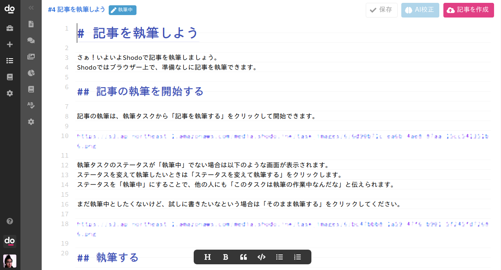

記事を執筆しよう¶
Shodoで記事を執筆しましょう。 Shodoではブラウザー上で、準備なしに記事を執筆できます。
記事の執筆を開始する¶
記事の執筆は、執筆タスクから「記事を執筆する」をクリックして開始できます。

執筆タスクのステータスが「執筆中」でない場合は以下のような画面が表示されます。 ステータスを変えて執筆したいときは「ステータスを変えて執筆する」をクリックします。 ステータスを「執筆中」にすることで、他の人にも「このタスクは執筆の作業中なんだな」と伝えられます。
まだ執筆中としたくないけど、試しに書きたいなという場合は「そのまま執筆する」をクリックしてください。

執筆する¶
いよいよShodoでの執筆です！ 画面中央のエディター部分に記事を書けます。 書いた文章は自動でShodoに保存されますので、「保存」ボタンなどを逐次クリックする必要はありません。

記事を書くときは上から下に完成品を書く必要はありません。 まずは、書きたい内容の見出しを書くのが良いでしょう。 以下のように書きたいことを一覧に書いて、そこから内容を膨らませていくことをオススメします。
〇〇機能リリースのお知らせ 導入、1行説明 背景、なぜ必要か 詳細な機能の説明 利用開始の方法（求めるアクション）
記事の校正は自動で！¶
Shodoでは自動で記事の校正が行われます。 たとえば「見れる」のようなら抜き言葉は即時で赤ペンがついてくれます。
日本語の表現やニュアンス、自動校正で指摘できない範囲はAI校正でチェックされます。 AI校正が「一般的に文章を考えた場合の自然さ」をもとに判断し、「もしかして？」と変更を提案します （現在のAIでは一般的な文章として判断しますので、専門的な単語や特殊な表現は良くないと判断される場合があります）。
記事が書けたらどうする？¶
記事が書き終わったら、「記事を作成」をすることではじめてチームメンバーに記事が共有されます。 「よし書き終わったな」という段階で画面右上の「バージョン1を作成」をクリックしてください。 以下のようにレビューを依頼するかどうかを聞く画面が表示されます。

レビュアーにレビューの依頼をするときは「レビュー依頼する」をクリックしてください。 「まだレビューの依頼はしないけど、記事としてまとめたいな」というときは「記事作成」をクリックしてください。
「レビュー依頼する」をクリックした場合、レビュアーの設定と依頼コメントを書けます。

依頼されたレビュアーは、Shodoのダッシュボード画面からレビュー依頼されている執筆タスクを確認できます。 執筆者としては一旦ここで休憩になります。依頼されたレビューに対応する方法は次のページで説明します。
サイドバーの説明¶
執筆画面の左にあるサイドバーから、エディターのいろいろな機能を使えます。 それぞれ、以下のようなことができます。
| 要素 | 説明 |
|---|---|
| タスク | 執筆タスクの説明や状態を確認できます |
| レビュー | レビュアーからのレビュー一覧を確認できます |
| 画像 | 画像のアップロード、貼り付けができます |
| 文章分析 | 記事の単語比率や読了時間などの分析結果が見られます |
| 表記ゆれ | 設定されている表記ゆれを確認できます |
| 文字校正 | 有効な文字校正ルールを確認できます |
| 設定 | 記事執筆のエディターを設定できます |
Shodoで使えるフォーマットは？¶
Shodoでは現在、プレーンテキスト・Markdown形式に対応しています。 執筆画面の上部にあるツールバーから、見出し、太字、引用、コードなどのMarkdownのシンタックスを入力できます。
Markdownは以下のような、文章を書くことに特化したフォーマットです。
# 見出し1
こんにちは、文章。
**太字** や *斜め文字* を使えます。
- リスト1
- リスト2
- リスト3
他にも `print("Hello")` などのコード文字や、引用の表記もできます。
> 引用の文章
Markdownは、はてなブログ、WordPress（プラグイン導入時）に使える記法です。 HTMLに変換でき、プレーンテキストのままでも読みやすい特徴があります。